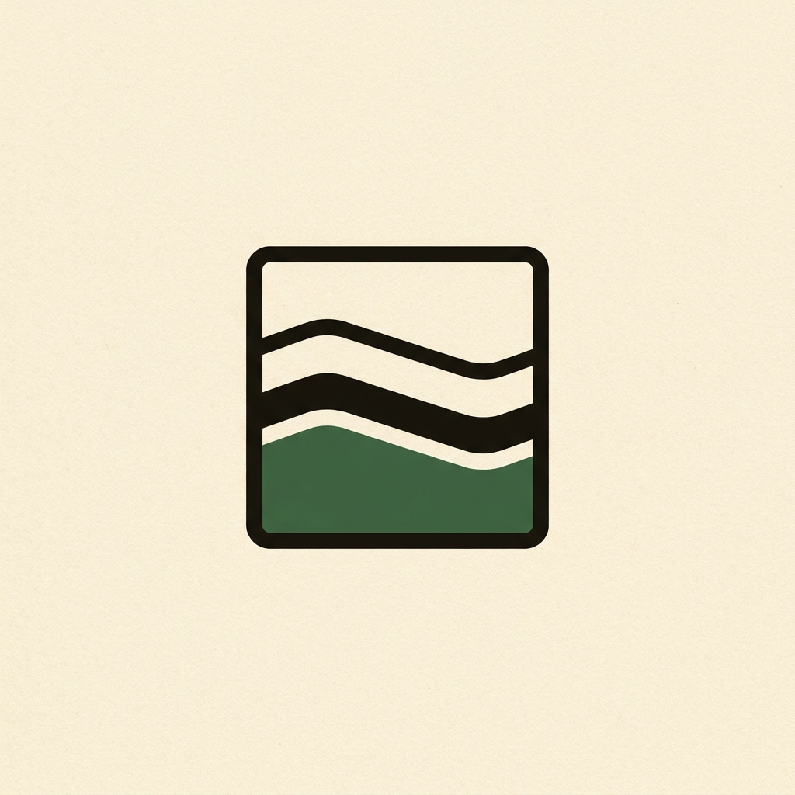
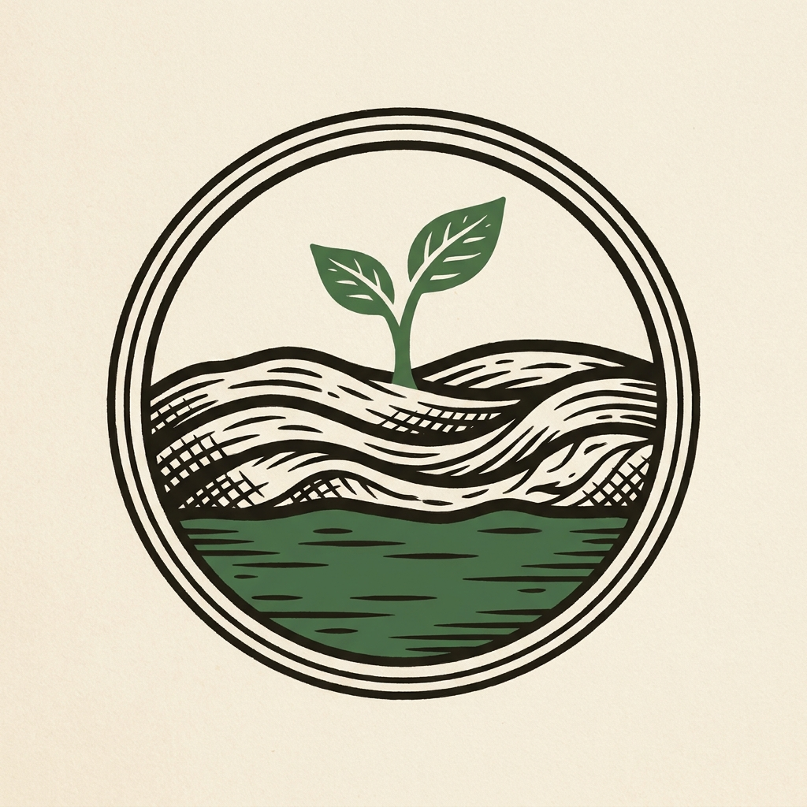
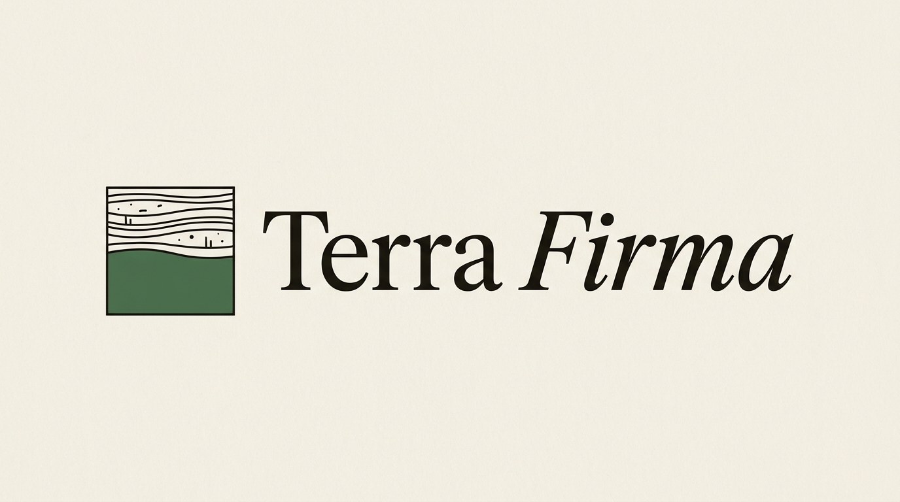
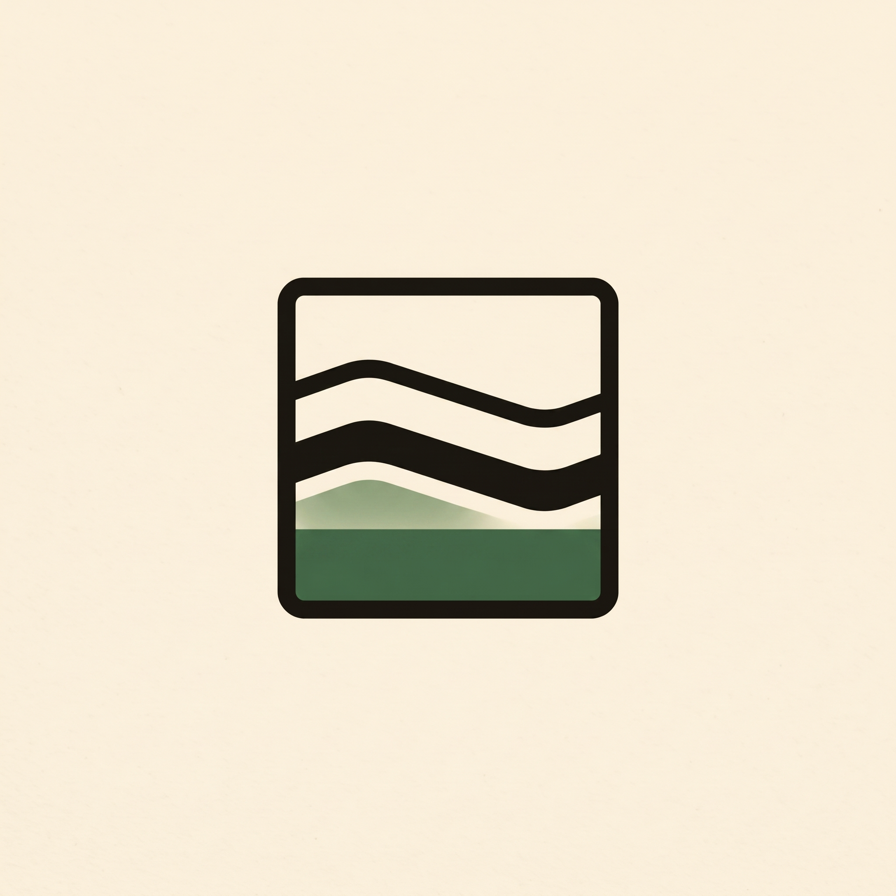
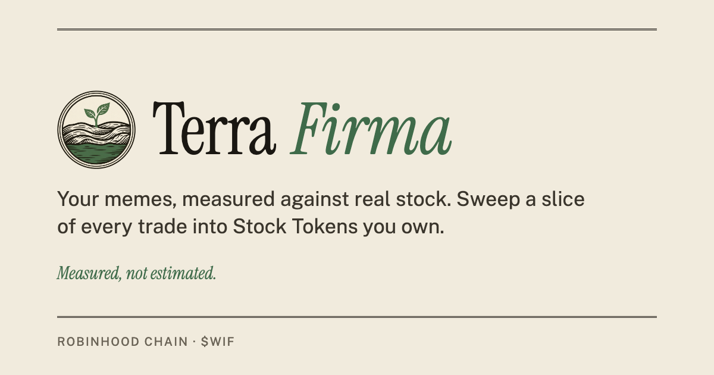

Terra Firma — logo concepts
Generated with Nano Banana Pro (stablestudio). The final shipped mark is the hand-built vector of concept 1.
FINAL — shipped vector (web/public/logo.svg)Built from concept 1

1 · Strata squareWavy meme layers over moss bedrock — selected

2 · Seal with seedlingEngraved feel; too detailed at 16px
3 · TF monogram on bedrockElegant; letters merge into "TIF" when small

4 · Combination lockupIcon + wordmark; icon too busy small

1b · Refinement (rejected)Gradient "ghost hill" artifact, tiny in frame
Size + context test256 / 64 / 32 / 16px, dark bg, with wordmark

Share image (1200×630)Shown when the link is posted